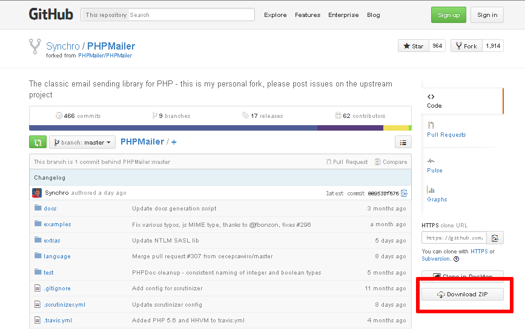

Send Mail with PHP
If you’re a PHP application developer, you might need to send email notifications through your custom PHP applications. With XAMPP, there are three ways to do this: you can use the PEAR Net_SMTP and Mail packages, you can use a simple SMTP client like msmtp, or you can use the third-party PHPMailer class. This guide walks you through these options.
| This guide assumes that you have an existing Gmail account, and that you will use Gmail’s SMTP server to transmit email. You can also use your organization or ISP’s mail server, although you’ll need to replace key details, such as the SMTP server name and port, with appropriate values for your environment. Your network administrator or ISP support desk will typically be able to provide this information. The example code provided in this tutorial is illustrative only and should not be used in production environments. |
Use PEAR Mail
To configure XAMPP to use the PEAR Mail and Net_SMTP packages for email notifications, follow these steps:
-
Install the Mail and Net_SMTP PEAR modules:
pear install Net_SMTP Mail
Note that if these packages are already installed in your system you see the messages below when executing that command:
Ignoring installed package pear/Net_SMTP Ignoring installed package pear/Mail Nothing to install
-
Use your text editor to create an example script named sendmail.php in the htdocs/ subdirectory and fill it with the following code. Once done, save your changes.
<?php require_once "Mail.php"; $from = "your-gmail-username@gmail.com"; $to = 'recipients@email-address.com'; $host = "ssl://smtp.gmail.com"; $port = "465"; $username = 'your-gmail-username@gmail.com'; $password = 'your-gmail-password'; $subject = "test"; $body = "test"; $headers = array ('From' => $from, 'To' => $to,'Subject' => $subject); $smtp = Mail::factory('smtp', array ('host' => $host, 'port' => $port, 'auth' => true, 'username' => $username, 'password' => $password)); $mail = $smtp->send($to, $headers, $body); if (PEAR::isError($mail)) { echo($mail->getMessage()); } else { echo("Message successfully sent!\n"); } ?>Remember to replace the dummy values shown with your actual Gmail address, password and recipient email address. For this simple test, use your own email address as the recipient address.
Now, browse to the URL http://localhost/sendmail.php to execute the script and send the email message. If all goes well, you should see a success notification in your browser. If you used your own email address for the recipient address, you should also receive the email message.
Use msmtp
To configure XAMPP to use msmtp for email notifications, follow these steps:
-
Ensure that you are logged in as root. Install the msmtp package.
apt-get install msmtp
-
Create a new file at /etc/msmtprc and fill it with the following configuration directives:
defaults tls on tls_starttls on tls_trust_file /etc/ssl/certs/ca-certificates.crt account default host smtp.gmail.com port 587 auth on user your-gmail-username@gmail.com password your-gmail-password from your-gmail-username@gmail.com logfile /var/log/msmtp.log
Remember to replace the dummy values shown with your actual Gmail address and account password.
-
Restart the Apache server using the XAMPP control panel.
| For more information on configuring msmtp to work with Gmail, refer to this source thread or the msmtp documentation. |
You can now use PHP’s mail() function to send email from your application. To illustrate how it can be used with your Gmail account, use your text editor to create an example script named sendmail.php in the htdocs/ subdirectory and fill it with the following code. Once done, save your changes.
<?php
$to = 'recipients@email-address.com';
$subject = 'Hello from XAMPP!';
$message = 'This is a test';
$headers = "From: your@email-address.com\r\n";
if (mail($to, $subject, $message, $headers)) {
echo "SUCCESS";
} else {
echo "ERROR";
}
Remember to replace the dummy values shown with valid email addresses. For this simple test, use your own email address as the recipient address.
Now, browse to the URL http://localhost/sendmail.php to execute the script and send the email message. If all goes well, you should see a success notification in your browser. If you used your own email address for the recipient address, you should also receive the email message.
Use PHPMailer
To configure XAMPP to use PHPMailer for email notifications, follow these steps:
-
Download PHPMailer from its Github repository using the "Download Zip" button.
 -
Create a directory for your new application within the htdocs/ subdirectory of your XAMPP installation directory. In this tutorial, the application directory is named example/.
-
Extract the contents of the PHPMailer ZIP archive to the application directory.
You can now use PHPMailer to send email from your application. To illustrate how it can be used with your Gmail account, use your text editor to create an example script named phpmailer.php in the application directory, and fill it with the following code. Once done, save your changes.
<?php
require 'PHPMailer-master/PHPMailerAutoload.php';
$mail = new PHPMailer;
$mail->isSMTP();
$mail->SMTPSecure = 'tls';
$mail->SMTPAuth = true;
$mail->Host = 'smtp.gmail.com';
$mail->Port = 587;
$mail->Username = 'your-gmail-username@gmail.com';
$mail->Password = 'your-gmail-password';
$mail->setFrom('your@email-address.com');
$mail->addAddress('recipients@email-address.com');
$mail->Subject = 'Hello from PHPMailer!';
$mail->Body = 'This is a test.';
//send the message, check for errors
if (!$mail->send()) {
echo "ERROR: " . $mail->ErrorInfo;
} else {
echo "SUCCESS";
}
Remember to replace the dummy values shown with your actual Gmail address and account password. You should also use a valid sender and recipient address. For this simple test, use your own email address as the recipient address.
Now, browse to the URL http://localhost/example/phpmailer.php. This should execute the script and send the email message. If all goes well, you should see a success notification in your browser. If you used your own email address for the recipient address, you should also receive the email message.
| As a security precaution, Gmail will automatically rewrite the From: and Reply-to: headers in your email message to reflect your Gmail address. If you want to avoid this, you must add and validate your custom email address in your Gmail account as a sender. Refer to Gmail’s documentation for more information and important restrictions. |